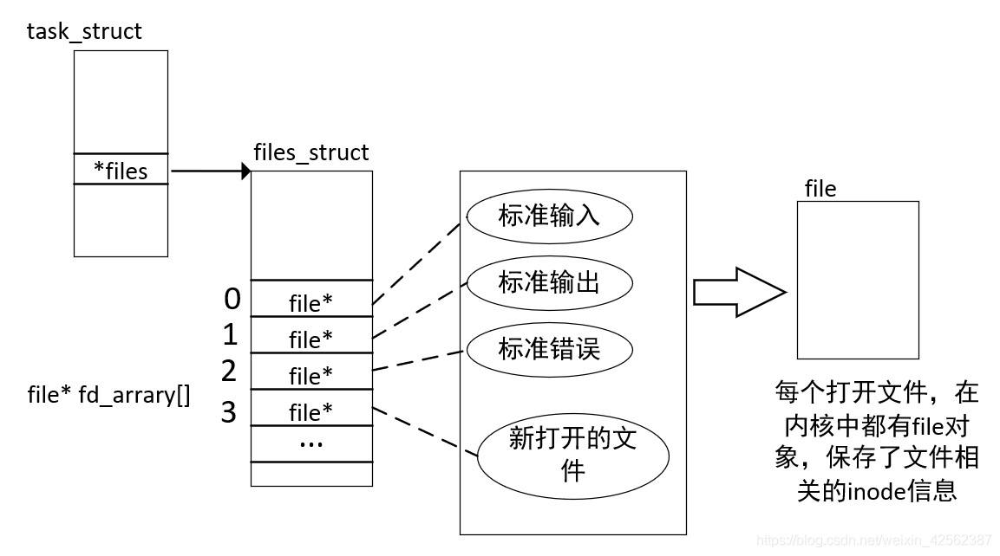
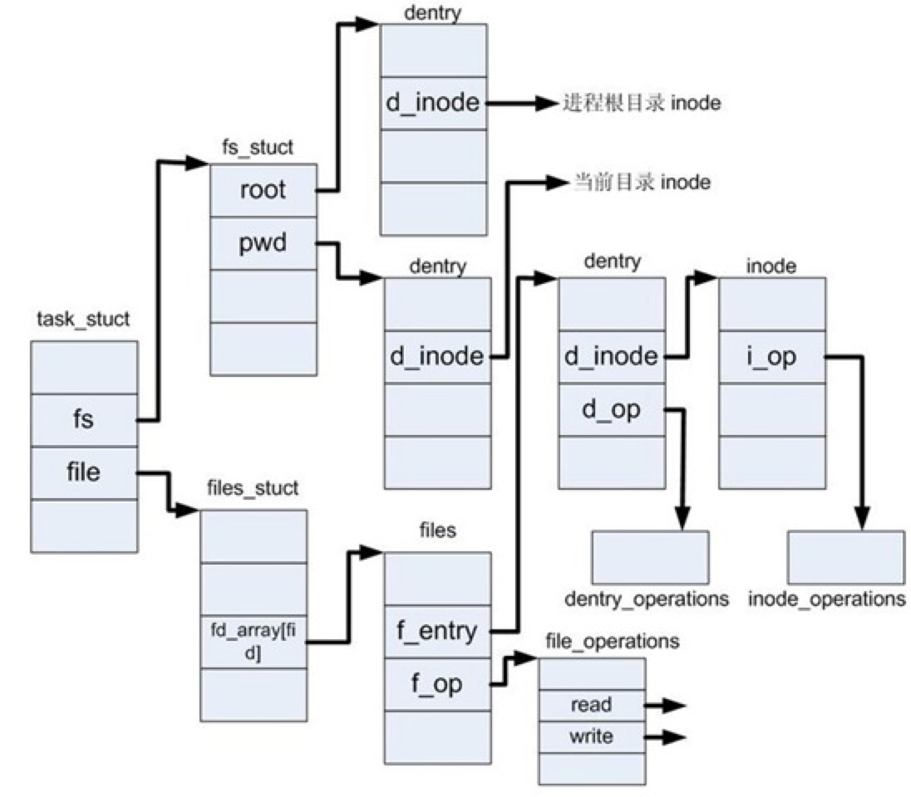
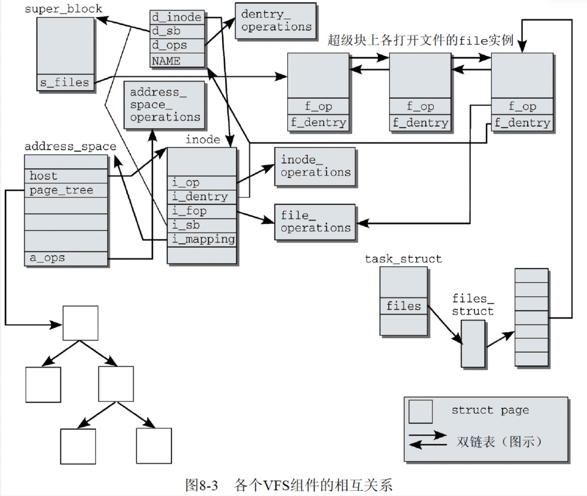
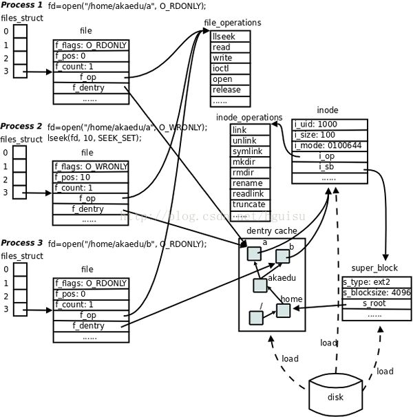
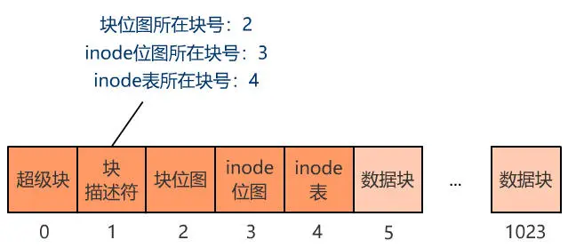

概述
- 超级块（super_block）、索引节点（inode）、目录结构（dentry） 和 文件结构（file）这几个结构体组成了 VFS 的核心概念.
一 inode 数据结构
- 磁盘上真正的一个文件，在内核中是使用一个 inode 数据结构表示.
- struct inode 在源码中的位置: include/linux/fs.h:788
- struct inode 整体面貌如下:
struct inode {
struct hlist_node i_hash;
struct list_head i_list; /* backing dev IO list */
struct list_head i_sb_list;
struct list_head i_dentry;
unsigned long i_ino;
atomic_t i_count;
unsigned int i_nlink;
uid_t i_uid;
gid_t i_gid;
dev_t i_rdev;
u64 i_version;
loff_t i_size;
#ifdef __NEED_I_SIZE_ORDERED
seqcount_t i_size_seqcount;
#endif
struct timespec i_atime;
struct timespec i_mtime;
struct timespec i_ctime;
blkcnt_t i_blocks;
unsigned int i_blkbits;
unsigned short i_bytes;
umode_t i_mode;
spinlock_t i_lock; /* i_blocks, i_bytes, maybe i_size */
struct mutex i_mutex;
struct rw_semaphore i_alloc_sem;
const struct inode_operations *i_op;
const struct file_operations *i_fop; /* former ->i_op->default_file_ops */
struct super_block *i_sb;
struct file_lock *i_flock;
struct address_space *i_mapping;
struct address_space i_data;
#ifdef CONFIG_QUOTA
struct dquot *i_dquot[MAXQUOTAS];
#endif
struct list_head i_devices;
union {
struct pipe_inode_info *i_pipe;
struct block_device *i_bdev;
struct cdev *i_cdev;
};
__u32 i_generation;
#ifdef CONFIG_FSNOTIFY
__u32 i_fsnotify_mask; /* all events this inode cares about */
struct hlist_head i_fsnotify_mark_entries; /* fsnotify mark entries */
#endif
#ifdef CONFIG_INOTIFY
struct list_head inotify_watches; /* watches on this inode */
struct mutex inotify_mutex; /* protects the watches list */
#endif
unsigned long i_state;
unsigned long dirtied_when; /* jiffies of first dirtying */
unsigned int i_flags;
atomic_t i_writecount;
#ifdef CONFIG_SECURITY
void *i_security;
#endif
#ifdef CONFIG_FS_POSIX_ACL
struct posix_acl *i_acl;
struct posix_acl *i_default_acl;
#endif
void *i_private; /* fs or device private pointer */
};
- 一些重要的成员含义
unsigned long i_ino; /*inode号码*/
uid_t i_uid; /*用户*/
gid_t i_gid; /*用户组*/
struct timespec i_atime; /*文件的access time*/
struct timespec i_mtime; /*文件的motify time*/
struct timespec i_ctime; /*文件的属性改变的time */
const struct inode_operations *i_op; /*指向和super_block相关的操作，例如删除一个inode,肯定是要更新文件系统的super_block的*/
const struct file_operations *i_fop; /*指向该文件支持的操作，例如往该文件里写数据,是真正的操作磁盘写数据*/
二 dentry
1 目录项的主要作用是方便查找文件。一个路径的各个组成部分，不管是目录还是普通的文件，都是一个目录项对象。如，在路径 /home/hero/example.c 中，目录 /, home/, hero/ 和文件 example.c 都对应一个目录项对象。 2 目录项里有一个 d_inode 成员，指向真正的 inode
dentry 的源码 ,在 include/linux/dcache.h 89 行
struct dentry {
atomic_t d_count; //目录项对象引用计数器，当有process占用该文件的时候则d_count值加1.在某个进程删除文件的时候会判断该值的大小。
unsigned int d_flags; /* protected by d_lock */
spinlock_t d_lock; /* per dentry lock */
int d_mounted; /*表示dentry是否是一个挂载点，如果是挂载点，该成员不为0*/
struct inode *d_inode; /* Where the name belongs to - NULL is
* negative */
/*
* The next three fields are touched by __d_lookup. Place them here
* so they all fit in a cache line.
*/
struct hlist_node d_hash; /* lookup hash list,链接到dentry cache的hash链表 */
struct dentry *d_parent; /* parent directory ,指向父dentry结构的指针*/
struct qstr d_name; //文件名
struct list_head d_lru; /* LRU list */
/*
* d_child and d_rcu can share memory
*/
union {
struct list_head d_child; /* child of parent list */
struct rcu_head d_rcu;
} d_u;
struct list_head d_subdirs; /* our children , 是子项的链表头，子项可能是目录也可能是文件，所有子项都要链接到这个链表*/
struct list_head d_alias; /* inode alias list */
unsigned long d_time; /* used by d_revalidate */
const struct dentry_operations *d_op;
struct super_block *d_sb; /* The root of the dentry tree */
void *d_fsdata; /* fs-specific data */
unsigned char d_iname[DNAME_INLINE_LEN_MIN]; /* small names */
};
-
dentry 结构的主要用途是建立文件名和相关 inode 节点之间的关联，dentry 结构中三个成员用于该目的。
-
- d_inode 是指向相关 inode 实例的指针
-
- d_name 指定了文件的名称
-
- 如果文件名只是有少量的字符组成，则保存在 d_iname 中，以方便加速访问，短文件名一般不操作 16 个字符
-
每个目录项对象都有四种状态，分别为：
-
- 空闲状态：该状态目录项对象不包含有效信息，没有被 VFS 使用
-
- 未使用状态：当前没有被内核使用，d_count 的值为 0，d_inode 任然指向相关的索引节点
-
- 正在使用状态：正在被使用，d_count 的值大于 0，d_inode 任然指向相关的索引节点
-
- 负状态：与目录项关联的索引节点不存在，相应的磁盘索引节点已经被删除。
-
dentry 的作用分析
-
- 每个文件的 dentry 链接到父目录的 dentry,形成了文件系统的结构树。比如有一个目录/usr，也就是 usr 的 dentry 的 d_child 成员链接到根目录/的 dentry 的 d_subdirs 成员。通过父目录查找目录下的子目录是通过 hash 表查找的。
三 file 结构体
- 每当进程打开一个文件,内核返回的是一个 file 结构体，用于管理被打开的文件
- 文件结构用于描述一个已打开的文件，其包含文件当前的读写偏移量，文件打开模式和文件操作函数列表等
- 进程 task_struct 结构体中，有 files 成员指向 files_struct (文件描述符表),files_struct 里有 fd_array 指向一个个 file 结构体.file 结构体里有文件支持的操作函数，例如读、写、文件偏移等. 这些操作函数可以真正的改变文件的内容.
- file 结构体里还含有 dentry 的指针，因此通过 file 结构体也可以找到具体的 inode.
struct file {
/*
* fu_list becomes invalid after file_free is called and queued via
* fu_rcuhead for RCU freeing
*/
union {
struct list_head fu_list;
struct rcu_head fu_rcuhead;
} f_u;
struct path f_path;
#define f_dentry f_path.dentry
#define f_vfsmnt f_path.mnt
const struct file_operations *f_op;
spinlock_t f_lock; /* f_ep_links, f_flags, no IRQ */
atomic_long_t f_count;
unsigned int f_flags;
fmode_t f_mode;
loff_t f_pos;
struct fown_struct f_owner;
const struct cred *f_cred;
struct file_ra_state f_ra;
u64 f_version;
#ifdef CONFIG_SECURITY
void *f_security;
#endif
/* needed for tty driver, and maybe others */
void *private_data;
#ifdef CONFIG_EPOLL
/* Used by fs/eventpoll.c to link all the hooks to this file */
struct list_head f_ep_links;
#endif /* #ifdef CONFIG_EPOLL */
struct address_space *f_mapping;
#ifdef CONFIG_DEBUG_WRITECOUNT
unsigned long f_mnt_write_state;
#endif
#ifndef __GENKSYMS__
struct mutex f_pos_lock;
#endif
};
struct file {}结构体内，有一个struct path成员，该成员的源码如下:
struct path {
struct vfsmount *mnt;
struct dentry *dentry;
};
file 结构体和 inode 的对应关系:
-
多个 file 结构体可以指向同一个 inode，例如进程 A 和进程 B 都打开了同一个文件/home/hero/example.c ,内核会产生 2 个 file 结构体
-
进程的 FD 和 file 结构体的对应关系:
-
- 一开始是一对一，也可以有多对一的情况
-
- 例如进程 A，通过 fork()系统调用产生了子进程，那么子进程的 FD table 默认是复制了父进程的,这个时候进程的 FD 就对应同一个 file 结构体了.
四 super_block
Linux 支持多文件系统，所以在内核中必须通过一个数据结构来描述具体文件系统的信息和相关的操作等，VFS 定义了一个名为 超级块（super_block） 的数据结构来描述具体的文件系统，也就是说内核是通过超级块来认知具体的文件系统的，一个具体的文件系统会对应一个超级块结构
下面我们介绍一下一些比较重要的成员：
- s_dev：用于保存设备的设备号
- s_blocksize：用于保存文件系统的数据块大小（文件系统是以数据块为单位的）
- s_type：文件系统的类型（提供了读取设备中文件系统超级块的方法）
- s_op：超级块相关的操作列表
- s_root：挂载的根目录
inode 数据结构中，有个 const struct inode_operations i_op ，用来指向 inode 本身属性的一些修改， struct super_block i_sb; 则指向该 inode 对应的 super_block. 因此例如删除一个真正的文件(inode)，必须更新其对应 super_block 信息.
1 super_block 源码
super block 源代码位置
include/linux/fs.h:1424
struct super_block {
struct list_head s_list; /* Keep this first */
dev_t s_dev; /* search index; _not_ kdev_t */
unsigned long s_blocksize;
unsigned char s_blocksize_bits;
unsigned char s_dirt;
loff_t s_maxbytes; /* Max file size */
struct file_system_type *s_type;
const struct super_operations *s_op;
const struct dquot_operations *dq_op;
const struct quotactl_ops *s_qcop;
const struct export_operations *s_export_op;
unsigned long s_flags;
unsigned long s_magic;
struct dentry *s_root;
struct rw_semaphore s_umount;
struct mutex s_lock;
int s_count;
int s_need_sync;
atomic_t s_active;
#ifdef CONFIG_SECURITY
void *s_security;
#endif
struct xattr_handler **s_xattr;
struct list_head s_inodes; /* all inodes */
struct hlist_head s_anon; /* anonymous dentries for (nfs) exporting */
struct list_head s_files;
/* s_dentry_lru and s_nr_dentry_unused are protected by dcache_lock */
struct list_head s_dentry_lru; /* unused dentry lru */
int s_nr_dentry_unused; /* # of dentry on lru */
struct block_device *s_bdev;
struct backing_dev_info *s_bdi;
struct mtd_info *s_mtd;
struct list_head s_instances;
struct quota_info s_dquot; /* Diskquota specific options */
int s_frozen;
wait_queue_head_t s_wait_unfrozen;
char s_id[32]; /* Informational name */
void *s_fs_info; /* Filesystem private info */
fmode_t s_mode;
/*
* The next field is for VFS *only*. No filesystems have any business
* even looking at it. You had been warned.
*/
struct mutex s_vfs_rename_mutex; /* Kludge */
/* Granularity of c/m/atime in ns.
Cannot be worse than a second */
u32 s_time_gran;
/*
* Filesystem subtype. If non-empty the filesystem type field
* in /proc/mounts will be "type.subtype"
*/
char *s_subtype;
/*
* Saved mount options for lazy filesystems using
* generic_show_options()
*/
char *s_options;
#ifndef __GENKSYMS__
struct sb_writers s_writers;
atomic_t s_fsnotify_marks;
wait_queue_head_t s_fsnotify_marks_wq;
#endif
};
struct path {
struct vfsmount *mnt;
struct dentry *dentry;
};
五 总结一下各个结构体之间的联系
1 总结




- 同时我们注意到super_block对象也有s_inodes成员, 指向本文件系统的所有inode
| 结构体 | 作用 | 注意点 |
|---|---|---|
| struct super_block | 表示一个超级块实例, 同时也是一个具体的文件系统实例, 因为 inode 都是从 super_block 这里分配和维护的 | |
| struct inode | 表示一个文件实例, 同时目录也是一种特殊的文件, 并且还可以表示各类特殊文件(管道文件、设备文件), 这个结构体存储和维护文件的元数据. 文件的数据则存储在 block 中 | |
| struct dentry | dentry 结构的主要用途是建立文件名和相关 inode 节点之间的关联,仅在内存中有, 在磁盘上没有该结构体, 并且有 dcache, 用于 VFS 快速找到对应 inode。“dentry”是 directory entry（目录项）的缩写。我们传给 open、stat 等函数的参数的是一个路径，例如/home/akaedu/a，需要根据路径找到文件的 inode。为了减少读盘次数，内核缓存了目录的树状结构，称为 dentry cache，其中每个节点是一个 dentry 结构体，只要沿着路径各部分的 dentry 搜索即可，从根目录/找到 home 目录，然后找到 akaedu 目录，然后找到文件 a。dentry cache 只保存最近访问过的目录项，如果要找的目录项在 cache 中没有，就要从磁盘读到内存中。 . | |
| struct file | 从 task_struct 角度, 表示一个打开的文件. 在 file 结构体中维护 File Status Flag（file 结构体的成员 f_flags）和当前读写位置（file 结构体的成员 f_pos） | |
| struct vfsmount | 用来描述一个安装文件系统的实例, 下游是 super_block, 同时这一层可以设置一些特殊标记, 例如禁止本文件系统实例中使用 setuid 和 setgid 能力 | |
| struct file_system_type | 表示一种文件系统类型, 比如内核支持多种类型的文件系统 ext4,ntfs,fat 等, 则每种文件系统都会有一个 file_system_type 实例 |
一些例子
static struct file_system_type dev_fs_type = {
.name = "devtmpfs",
.mount = dev_mount,
.kill_sb = kill_litter_super,
};
一些内核 API
register_filesystem(&dev_fs_type);//注册 dev_fs_type 文件系统，即将 dev_fs_type 添加到内核全局总链表中 file_systemsunregister_filesystem(&dev_fs_type);// 取消注册
2 task_struct 中和文件系统相关的成员和结构体
A files_struct
- task_struct 中的 files 成员指向 files_struct, 代表一个 task_struct 打开的文件
struct task_struct {
...
/* filesystem information */
struct fs_struct *fs;
/* open file information */
struct files_struct *files;
/* namespaces */
struct nsproxy *nsproxy;
...
}
include/linux/fdtable.h:
/*
* Open file table structure
*/
struct files_struct {
/*
* read mostly part
*/
atomic_t count;
struct fdtable __rcu *fdt;
struct fdtable fdtab;
/*
* written part on a separate cache line in SMP
*/
spinlock_t file_lock ____cacheline_aligned_in_smp;
int next_fd;
unsigned long close_on_exec_init[1];
unsigned long open_fds_init[1];
struct file __rcu * fd_array[NR_OPEN_DEFAULT];
};
B fs_struct
- task_struct 中的 fs 成员指向 fs_struct, 代表进程所在的工作目录和根目录
C name_space
- task_struct 中的 nsproxy 成员指向 struct nsproxy, 然后由 nsproxy 包含各个 namespace

六 文件系统简要总结
一 文件系统核心

- 超级块: super_block, 记录 inode 使用量、inode 总数、block 大小、block 总数等信息
- 块描述符: 记录块位图、inode 位图等 block 的所在块号
-
块位图：实际的数据块的详细使用情况，是否被使用，被使用用 1 表示，未使用用 0 表示
-
inode 位图：实际 inode 使用详细情况，是否被使用，被使用用 1 表示，未使用用 0 表示, 哪些块是属于 inode 表的
- inode 表： 详细的 inode 信息，比如 inode 结构体大小为 256Byte，那么 256Byte 能记录的信息（用户权限、文件大小、修改日期等）是有限的，inode 表里面每一行就是一个 inode 结构体
二 文件系统本身在 IO 栈的角色
- 属于 MAPPING 层，说白了就是一个映射. 上层目录树到硬盘 sector 的映射。
三 文件名存储在目录inode节点对应的block内
-
inode包含了文件的元数据，例如文件权限、所有者信息、文件大小、创建和修改时间，以及指向文件实际数据块(data block)的指针.
-
Linux中一切皆文件，目录也不列外，目录也有对应的inode，其实目录inode指向的data block存储的就是这个目录下的所有文件名、对应的子目录名和他们对应inode number等对应关系。
-
例如，通过如下方法就可以读取出ext4文件系统一个目录的dentry内容，可以看到dentry下包含了目录下的所有文件名。
-
ext4文件系统实际存储在磁盘上的dentry结构：
struct ext4_dir_entry_2 {
__le32 inode; /* Inode number */
__le16 rec_len; /* Directory entry length */
__u8 name_len; /* Name length */
__u8 file_type; /* Type of file */
char name[EXT4_NAME_LEN]; /* File name, up to EXT4_NAME_LEN */
};
inode: 这是一个 32 位的字段，用于存储与该目录项关联的 inode 的编号。在 ext4 文件系统中，每个文件和目录都有一个 inode，其中包含了文件的元数据。
rec_len: 这个 16 位的字段表示整个目录项的长度，包括所有字段。这个长度应该是 4 的倍数。
name_len: 这是一个 8 位的字段，表示文件名的长度，不包括结尾的空字符。
file_type: 这个 8 位的字段用于指明文件的类型（如普通文件、目录、符号链接等）。这个字段的值通常会是如下几种：
- `EXT4_FT_UNKNOWN(0)` - 未知文件类型
- `EXT4_FT_REG_FILE(1)` - 普通文件
- `EXT4_FT_DIR(2)` - 目录
- `EXT4_FT_CHRDEV(3)` - 字符设备
- `EXT4_FT_BLKDEV(4)` - 块设备
- `EXT4_FT_FIFO(5)` - FIFO
- `EXT4_FT_SOCK(6)` - 套接字
- `EXT4_FT_SYMLINK(7)` - 符号链接
name[EXT4_NAME_LEN]: 这是一个字符数组，用于存储文件名。